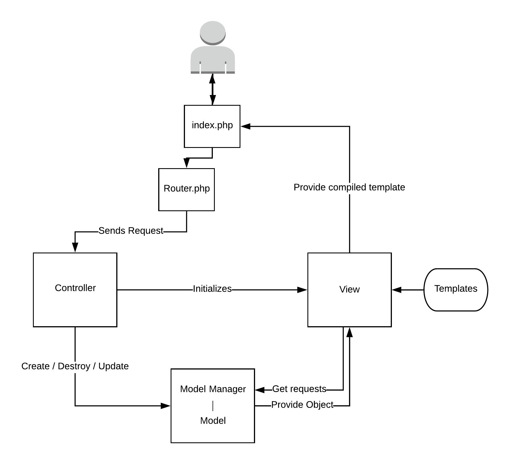
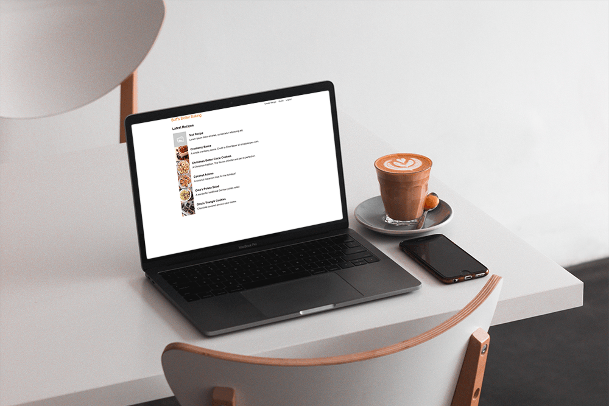

Recipe Sharing Site - Case Study
- Built an MVC framework from scratch
- Created a Database interface
- Wrote an Image Processing API
- Responsive Design
Intro
I love food. Specifically, I love the experience of creating food and how it has the tendency of bringing people together. This is one of the ways how my grandmother and I can bond. So when deciding on a web app to build, it was an easy choice.
I really wanted to challenge myself with this project from a backend perspective. I have used popular MVC frameworks in the past, Django and Ruby on Rails, but I always struggled with fully grasping the model. So I decided to build one myself, without any 3rd party tools.
Custom Model-View-Controller Framework
Having had experience with the MVC design pattern in the past, I knew the basics behind it's structure. For any of you unaware, MVC stands for Model-View-Controller. Each of these terms identify the 3 separate types of components in a web app:
- Model: The model handles the meat-and-potatoes of the product. It communicates with the database, interpreting and storing data as necessary.
- View: Views manage the visual presentation, taking data from the models and inserting them into templates for the final page presentation.
- Controller: All user requests go through the controller which routes the responses to the relevant view and model as needed.
How each of these traditionally coordinate together is best described by this graphic from wikipedia:

I found quickly found that the simplicity provided by the professional MVC frameworks had a lot more working behind the scenes than first meets the eye. For example, I found it easier, in my implementation, to create a separate Model Manager that would handle the creation, search of, and destruction of the Models themselves. This led to a slightly messier flow chart than the textbook one above.
First, the user will send a request to index.php via their browser which would immediately forward the request to Router.php. As of this writing, the framework only supports single page apps.
The Router.php was responsible for sending the user's request to the correct controller. It would do so with the following steps:
- Check the CSRF token is valid.
- Parse the requested URL for the specific page name.
- If the parsed page name matches with an existing controller, forward the request to the correct Controller.php file.
The controller would determine the type of request, whether it was a GET or POST. I ended up splitting POST requests into either PUT, CREATE, or DELETE, depending on a hidden REQUEST variables included in the form's POST. For GET requests, the controller would directly initialize the relevant view. For any POST request, the controller would reach out to the model manager and then the view.
Models are split into two distinct parts: the model and a model manager. Models handle interaction with the database and represent individual objects (such as a User or Recipe). Model managers, on the other hand, manage the individual model objects. The managers create new model objects, search the database for any given specific object so it could be manipulated or provided to the view which wanted to use it.
Finally the views themselves would either take the information provided to it from the controller, or it would request information about model objects from the model manager. It would take that information and hand it to the template. The template would organize the code into the HTML, and the view would replace the index.php's code with the resulting templates.
As a side note, templates were broken up into multiple separate sub-templates. This allowed for easy extensibility and prevented me from needing to rewrite code.
Image API
In order to provide an engaging customer experience, I wanted to provide the user an option to upload mouth-watering images the delicious foods that could be made by their recipes. In order to accomplish this, I needed to create an API that not only could allow for image upload and database storage, but also customizable retrievals.
This process was made easy using PHP's built in GD Graphics Library. When a new recipe was submitted, the image model would be directed to create a new image object based off of the uploaded image stream string. This would use GD's imagecreatefromstring() function, and new image would be promptly stored into the database.
static function createFromString($data_string, $id=null) {
$resource = imagecreatefromstring($data_string);
return new Image($resource, $id);
}
static function createFromUpload($file_info) {
$result = null;
if (isset($file_info["tmp_name"])) {
$tmp_name = $file_info["tmp_name"];
$image_stream_string = file_get_contents($tmp_name);
$result = static::createFromString($image_stream_string);
}
return $result;
}
When retrieving a user uploaded image, I wanted to trust that the user would upload a sensibly sized image. Who wants to load 8K images on their mobile network? By simply adding flags to the end of the image's URL, the server would handle the heavy lifting of image manipulation, saving the user's data.
Using the GD library, image resizing ended up being easy and straightforward:
function getResource() {
return $this->resource;
}
function getResizedResource($new_width, $new_height) {
return imagescale($this->resource, $new_width, $new_height);
}
function getScaledResource($percentage) {
$new_width = $this->width * (intval($percentage)/100);
return imagescale($this->resource, $new_width);
}
All the user would need to do is navigate to an address that looks like this, and a scaled image would be instantly generated:
https://example.com/index.php?page=image&id=6&width=100&height=100
Database Management
Very quickly, I realized that I was constantly rewriting SQL queries. In an effort to make my life easier, I spun off all queries into an internal DBManager interface.
This interface would manage all of the interactions with the database. It made the initial connection to the DB, would format the queries, and send it along. I opted to use PDO as the database manager for this tool.
In order to keep things as simple as possible, the DBManager would create a new instance of itself, generate a connection to the database, submit the query, and return the result. This method ended up being the most convenient pattern used across the site.
Takeaway
Developing the entire framework from scratch was a bit task to chew. I learned a lot doing it, and I would recommend others give it a try themselves. However, if you are trying to create a production ready environment, just use a well known and vetted framework!
